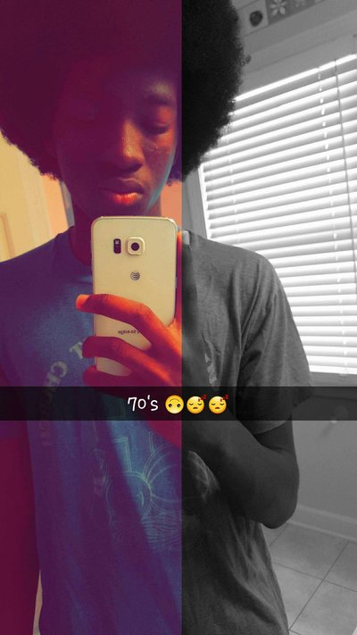
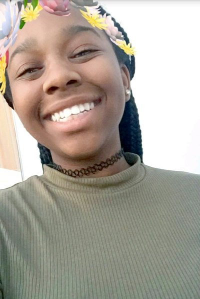

The idea for the clothing line "Free Kings" came from a rather unorthodox setting. One night my older brother and I were on the phone talking about life like we regularly do. My brother, Alfred Robinson, got on the topic of the famous basketball player Lebron James. My brother told me how the media often refers to him as "King James." He also started to indicate how there were many other great kings in our society. I replied, "What if they really live like a king?" However, those kings had many problems and issues. We pondered on "What would a king be without dilemmas?" for about ten minutes until the idea emerged. We later defined a Free King as having the right or power to be free and having the ability to live your life with the controller.
Greetings, my name is Alfred Robinson. I am the founder of the clothing line "Free Kings." Cinque and I grew up in Florence, Alabama with our five other siblings. Growing up with other siblings was very ehausting, but my parents persuaded me even harder that I am in control of my life. I eventually realized that when I graduated college at Remington College, and majored in heating/air conditioning technology. I am a very hard working person that doesn't stop until I reach that goal. One of my goals for this clothing line is to help other people understand that you can have control of the choices you make in your life.
Hello, my name is Cinque Peggs. I am one of the creators of this beautiful website you are looking at. Currently, I am a sophomore attending the Early College High School program in Jackson, Tennessee. My hobbies include listening to music, playing sports, and solving puzzles. This is my second year coding, and my first time designing a major project involving code. I really enjoy the atmosphere of coding, and I hope to proceed in life with a Computer Science major.
Hello, my name is Ermaya Wise. I am the partner of Cinque, and we designed this very website. I am also a sophmore attending Early College High School in Jackson, Tennesseese. My hobbies include reading, playing basketball, cooking, and helping others. This is my first time coding. I really enjoyit, however I hope to graduate college with a Health and Medicine Sciences major and Computer Science as my minor.